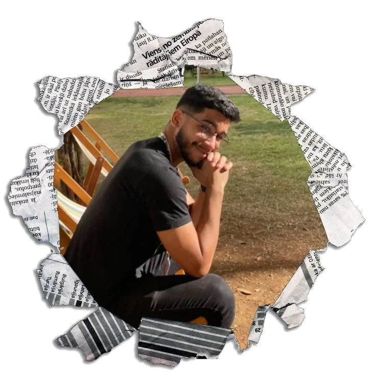

Estudante de Ciências Biológicas, com interesse em diferentes áreas da ciência, especialmente Neurociência, Oncologia e Biologia Celular. Também tenho grande interesse por música, buscando compreender cada vez mais sobre harmonia e teoria musical. No tempo livre, gosto de cozinhar, ler e acompanhar séries, filmes, histórias em quadrinhos e outros conteúdos do universo nerd. Sou uma pessoa curiosa, que gosta de aprender e ampliar meus conhecimentos em diferentes áreas.
Back in Black - ACDC
T.N.T - ACDC
Oceano - Djavan